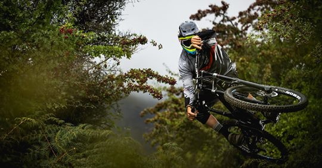

Jimmy Van Dinter Breaks Bozeman's Downhill Time Record
 Annual Franklin cyclethon sets a record for both the high temperature and the number of entrants. Twelve teams of eight cyclists each are racing this year in the event. The race will wrap up on Saturday. Cheer on your favorite team!
Be alert for temporary road closures associated with the race. Remember to share the road with the spectators on bicycles.